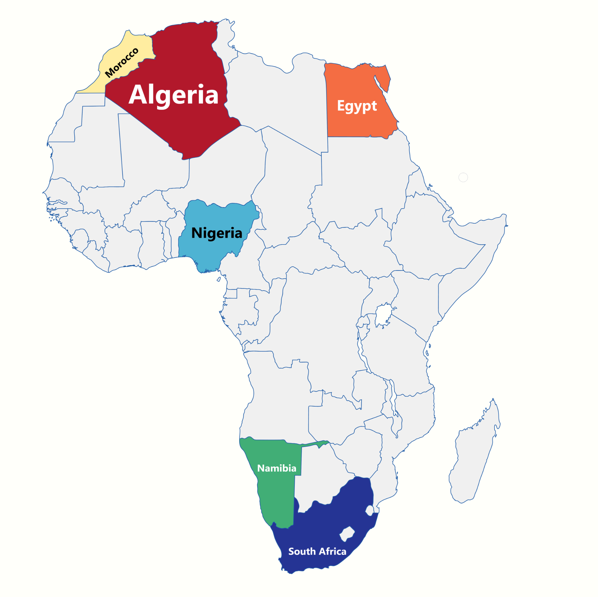

How did we select, refine, model, and analyse our data?
Data Selection
Need more info about where we obtained all the different data sets from.
For context, the relevant countries we selected are located on the following areas of the African continent.
Data Preparation
A brief overview on how we prepared the data. Imputed data stuff.
Training
What training model did we use. Why did we use linear/quadratic, tricubic regression.
Understand the significance and impact of undernourishment in African countries!
Explore how various economic variables impact undernourishment in the visualisation of our results!
Read about how we interpreted our results and what we could do next time!